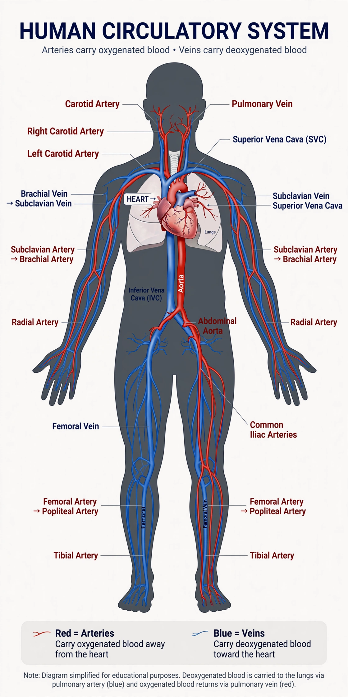

| Cardiovascular system | |
|---|---|
 | |
| Details | |
| Identifiers | |
| Latin | systema cardiovasculare |
| MeSH | D002319 |
| TA2 | 3891 |
| FMA | 7161 |
The cardiovascular system (also called the vascular system or circulatory system) is an organ system that permits blood to circulate and transport nutrients (such as amino acids and electrolytes), oxygen, carbon dioxide, hormones, and blood cells to and from the cells in the body to provide nourishment, help in fighting diseases, stabilize temperature and pH, and maintain homeostasis.
The blood circulatory system (cardiovascular system) consists of the heart, blood, and blood vessels, and delivers essential substances to the cells of the body and removes waste products. The lymphatic system is sometimes considered part of the circulatory system as well, draining excess fluid (lymph) from tissues back into the venous circulation.
The heart is a muscular organ, about the size of a closed fist, that functions as the body's circulatory pump. It is divided into four chambers: the right and left atria, which receive blood, and the right and left ventricles, which eject it. The right side of the heart pumps deoxygenated blood to the lungs (the pulmonary circulation), while the thicker-walled left side pumps oxygenated blood to the rest of the body (the systemic circulation). Valves between the chambers and at the outlets of the ventricles prevent backflow.
Blood vessels form a closed network of tubes. Arteries carry blood away from the heart under high pressure; they branch into smaller arterioles and then into capillaries, the thin-walled vessels across which gases, nutrients, and wastes are exchanged with tissues. Capillaries converge into venules and then veins, which return blood to the heart under low pressure, assisted by one-way valves and skeletal muscle contraction.
Blood is a connective tissue composed of plasma (about 55% by volume) and formed elements: red blood cells (erythrocytes), which carry oxygen bound to hemoglobin; white blood cells (leukocytes), which defend against infection; and platelets (thrombocytes), which mediate clotting. An average adult human has about 5 litres of blood.
In the systemic circulation, oxygenated blood leaves the left ventricle through the aorta, travels through arteries to the tissues, and returns via the venae cavae to the right atrium. In the pulmonary circulation, deoxygenated blood passes from the right ventricle through the pulmonary arteries to the lungs, where carbon dioxide is released and oxygen taken up, returning through the pulmonary veins to the left atrium. This double circulation is characteristic of birds and mammals. Other specialized pathways include the coronary circulation supplying the heart muscle itself and the hepatic portal system linking the gut to the liver.
The cardiovascular system maintains blood pressure and flow through neural and hormonal control. Baroreceptors in the carotid arteries and aortic arch sense pressure changes and adjust heart rate and vessel tone via the autonomic nervous system. Hormones such as adrenaline, angiotensin II, and antidiuretic hormone also regulate vascular resistance and blood volume. Cardiac output — the product of heart rate and stroke volume — is about 5 litres per minute at rest and can increase several-fold during exercise.
The cardiovascular system is one of the first systems to function in the embryo; the primitive heart tube begins beating in the fourth week of development. In the fetus, shunts such as the foramen ovale and ductus arteriosus bypass the non-functioning lungs; these normally close shortly after birth.
Cardiovascular diseases are the leading cause of death globally. They include coronary artery disease, stroke, hypertension, heart failure, rheumatic heart disease, congenital heart defects, and peripheral artery disease. Major modifiable risk factors include tobacco smoking, unhealthy diet, physical inactivity, obesity, diabetes, and dyslipidemia. The medical specialty devoted to these conditions is cardiology.
Circulatory arrangements vary across the animal kingdom. Fish have a single circulation with a two-chambered heart. Amphibians and most reptiles have a three-chambered heart permitting some mixing of oxygenated and deoxygenated blood. Many invertebrates, such as arthropods and most molluscs, have an open circulatory system in which hemolymph bathes the tissues directly, whereas annelids and cephalopods have closed systems.
This article is a recreation from memory in the style of Wikipedia.